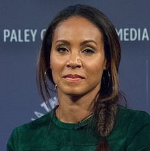
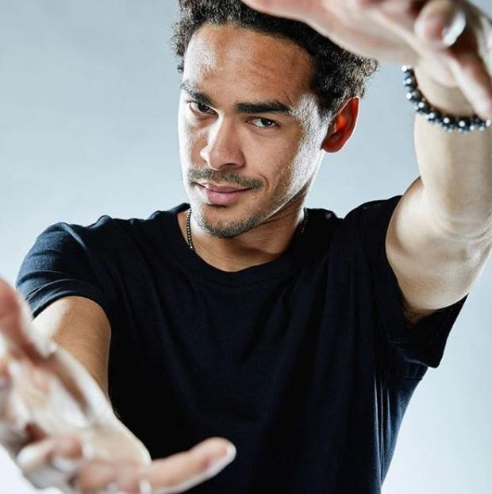
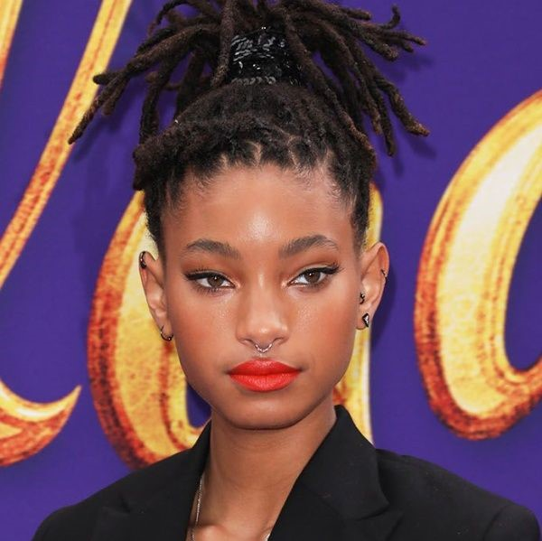
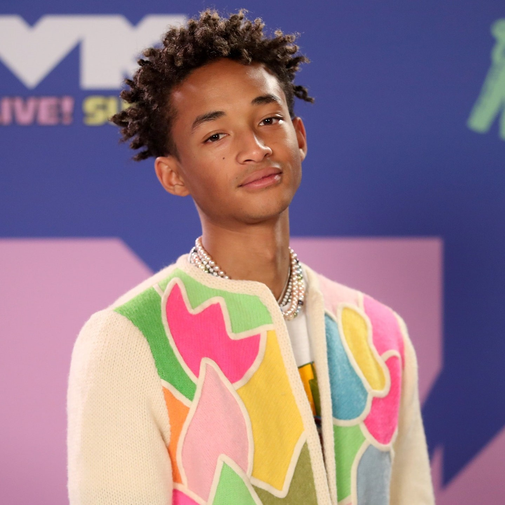

Nombre |
Descripción |
foto |
|---|---|---|
Jada Pinkett |
En 1997, Will Smith contrajo matrimonio con la actriz, productora, directora, cantante, compositora y empresaria estadounidense, Jada Pinkett. La esposa del actor comenzó su carrera en el año 1990 y es mayormente conocida por su personaje de Niobe en las películas The Matrix Reloaded y The Matrix Revolutions. Fruto de su matrimonio, Will y Jada tuvieron dos hijos: Jaden Smith y Willow Smith. |
 |
Trey Smith |
Nacido en 1992, Willard Carroll «Trey» Smith III, es un actor estadounidense que fue la inspiración para la canción de Will Smith «Just the Two of Us». El hijo mayor de Will Smith trabajó como corresponsal especial de Access Hollywood para eventos como Nickelodeon Kids Choice Awards, y el estreno de En busca de la felicidad. |
 |
Willow Smith |
Nacida en el año 2000, Willow Camille Reign Smith es la hija menor de Will Smith. Es conocida por ser una actriz, modelo y cantante pop. El debut cinematográfico de Willow fue en la película Soy Leyenda y más tarde tuvo una participación en Kit Kittredge: An American Girl junto a Abigail Breslin. La hija del actor recibió el premio Young Artist Award por su actuación. En el 2010 inició su carrera musical y su sencillos «Whip My Hair» tuvo tanto éxito que alcanzó el puesto número 11 en el Billboard Hot 100. |
 |
Jaden Smith |
Nacido en 1998, Jaden Christopher Syre Smith es un actor y rapero estadounidense que desatacó en la industria cinematográfica por su papel en la película del 2006, En busca de la felicidad. El hijo de Will Smith y Jada Pinkett también participó en The Day the Earth Stood Still (2008) y The Karate Kid (2010). Posteriormente, en el 2013, compartió set con su padre en el filme After Earth. |
 |